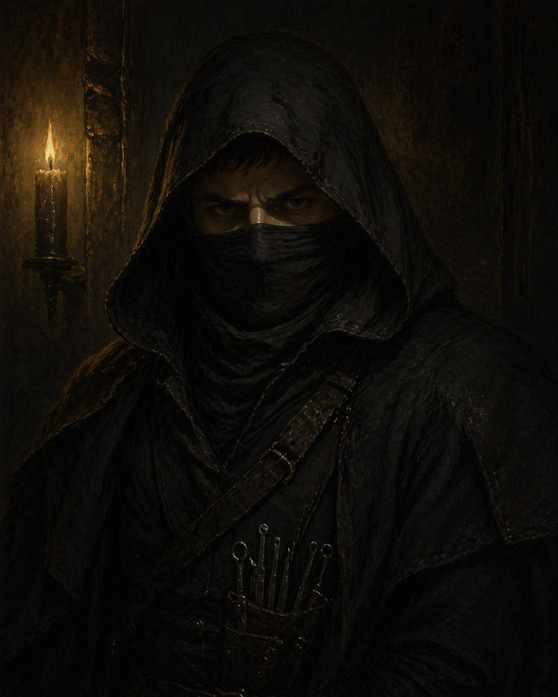

Flint � Arthur Barrow
Obsessed with systems of custody and accountability. His parents didn't have to die.
Reference: Locks of Doskvol ?
Player: Zach
Story Abilities
- Lock Reading — When the GM describes a lock, if you correctly name the lock type (from the Locks of Doskvol page) and state your specific approach before rolling, you gain +1d on the attempt. You read locks the way other people read faces.
Background
- Full name: Arthur Barrow
- Parents died in a preventable industrial accident � the defining wound of his life
- The boiler shutoff switch was behind a locked panel; the manager with the key was away from his post. They could not get through it in time.
- Obsession with locks, access, and custody: who is responsible for what, and who failed that responsibility
- Reads environments as systems � who built this, who owns it, who was supposed to prevent this from going wrong
Vice � Weird
A quiet, consuming preoccupation with locks � their mechanisms, their makers, their failures. OCD-level. It is not a hobby; it is a compulsion that stems directly from the boiler accident. The lock that could not be opened is the thing he replays. Every lock he defeats is some small settling of an account that can never actually be settled.
A locksmith who supplies exotic and unusual locks. Not a fence, not a criminal � just someone who understands the obsession and keeps feeding it. Frake is the one person who treats Flint's fixation as a craft rather than a disorder.
Friend & Foe
A "not-doctor" who works the docks. Unorthodox methods, no license, no questions asked. Can stitch up wounds that polite medicine would refuse to touch. Goes by "Sawtooth" on the waterfront � Brick knows this person under that name. Neither has mentioned the overlap yet.
A Bluecoat mid-management desk jockey. Not a field threat � a bureaucratic one. A string of unsolved thefts has landed on his desk and is making him look incompetent. He has started pulling threads. He does not know Flint's name yet, but he is looking in the right direction.
What the Crew Has Heard
- Carries a small, smooth river stone as a lucky charm � from a freshwater source in a foreign land.
- "I saw my parents die in a boiler explosion."
- "I can identify the make and model of a lock just by scent."
The Jared Reveal
Jared � Alaric's uncle � was responsible for the industrial accident that killed Flint's parents. Not maliciously. Through negligence. The kind of careless noble oversight that gets workers killed and never gets investigated. This reveal is coming. It will put Flint and Alaric directly at odds.
The Sunken Temple contains ancient obligation records � who was responsible for what, who failed their duty. Flint can read these systems. In the temple's physical structure, there may be records connecting noble-line negligence to old dock incidents. He won't get the full picture yet � just enough to feel wrong about something.
Connections
Moments to Create
- The Sunken Temple's obligation records � something that plants discomfort without the full reveal
- A moment where his skill at reading systems uncovers something a less obsessive person would miss
- The Jared reveal itself � ideally in a moment where acting on it would cost something
- The aftermath: what does Flint do with the information? What does justice look like when the perpetrator is your crewmate's family?